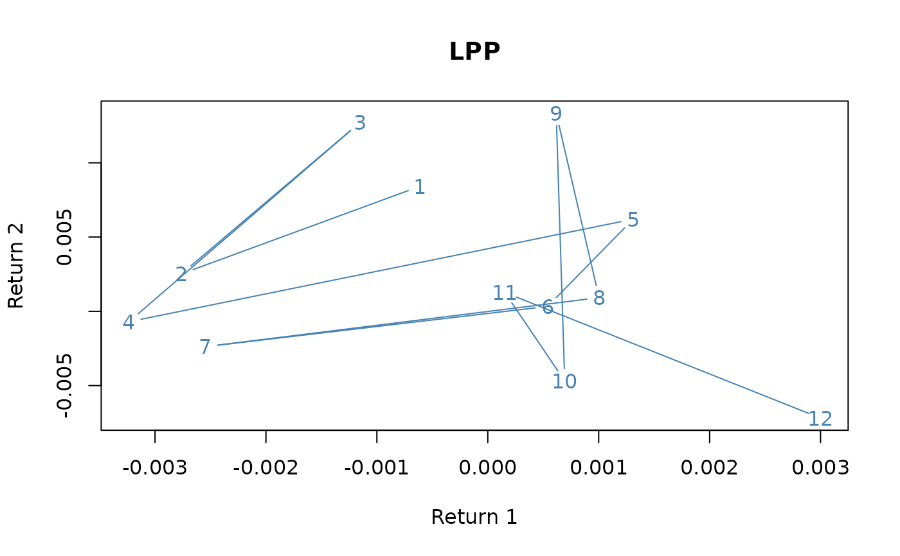
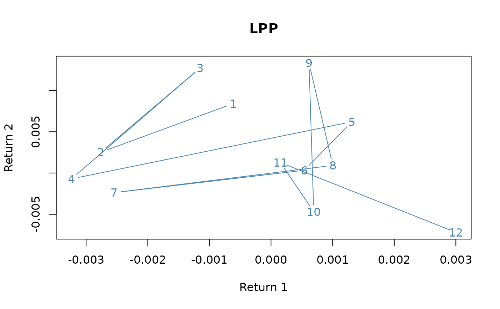

Plot 'timeSeries' objects
methods-plot.RdUsage
# S4 method for class 'timeSeries'
plot(x, y, FinCenter = NULL,
plot.type = c("multiple", "single"), format = "auto",
at = pretty(x), widths = 1, heights = 1, xy.labels,
xy.lines, panel = lines, nc, yax.flip = FALSE,
mar.multi = c(0, 5.1, 0, if (yax.flip) 5.1 else 2.1),
oma.multi = c(6, 0, 5, 0), axes = TRUE, ...)
# S4 method for class 'timeSeries'
lines(x, FinCenter = NULL, ...)
# S4 method for class 'timeSeries'
points(x, FinCenter = NULL, ...)
# S3 method for class 'timeSeries'
pretty(x, n=5, min.n=n%/%3, shrink.sml=0.75,
high.u.bias=1.5, u5.bias=0.5+1.5*high.u.bias, eps.correct=0, ...)Details
Our original method plot was build along R's plotting function
plot.ts with an additional argument to tailor the position
marks at user defined position specified by the argument at. We
call this style or theme "ts".
With verson R 3.1 we have inroduced two new additional plotting themes
called "pretty" and "chick". They are becoming active
when we set at = "pretty" or at = "chic".
Plot style or theme "pretty" is an extension of our original
plotting method.
Plot style or theme "chic" is an implementation along the
contributed packages xts and PerformanceAnalytics from
the Chicago finance group members ("chic" is an abbreviation of
Chicago.
For both themes, "pretty" and "chic", additional
arguments are passed through the ... arguments. These are:
Argument | Default | Description |
type | "l" | types pf plot |
col | 1 | colors for lines and points |
pch | 20 | plot symbol |
cex | 1 | character and symbol scales |
lty | 1 | line types |
lwd | 2 | line widths |
cex.axes | 1 | scale of axes |
cex.lab | 1 | scale of labels |
cex.pch | 1 | scale of plot symbols |
| ||
grid | TRUE | should grid lines plotted? |
frame.plot | TRUE | should b box around the plot? |
axes | TRUE | should be axes drawn on the plot? |
ann | TRUE | should default annotations appear? |
Concerning the plot elements, the length of these vectors has to be the same as the number of columns in the time series to be plotted. If their length is only one, then they are repeated.
There is an almost 70 pages vignette added to the package, with dozens of examples of tailored plots. Have a look in it.
Arguments
- x, y
objects of class
timeSeries.- FinCenter
a character with the the location of the financial center named as
"continent/city".- plot.type
for multivariate time series, should the series by plotted separately (with a common time axis) or on a single plot?
- format
POSIX label format, e.g. "%Y-%m-%d" or "%F" for ISO-8601 standard date format.
- at
a
timeDateobject setting the plot label positions. Ifat=pretty(x), the postitions are generated automatized calling the functionpretty. Default optionat="auto"selects 6 equal spaced time label positions. For the new plot themes set at="pretty" or at="chic". In this case additional arguments can be passed through the...arguments, see details.- widths, heights
widths and heights for individual graphs, see
layout.- xy.labels
logical, indicating if
text()labels should be used for an x-y plot, _or_ character, supplying a vector of labels to be used. The default is to label for up to 150 points, and not for more.- xy.lines
logical, indicating if
linesshould be drawn for an x-y plot. Defaults to the value ofxy.labelsif that is logical, otherwise toTRUE- panel
a
function(x, col, bg, pch, type, ...)which gives the action to be carried out in each panel of the display forplot.type="multiple". The default islines.- nc
the number of columns to use when
type="multiple". Defaults to 1 for up to 4 series, otherwise to 2.- yax.flip
logical indicating if the y-axis (ticks and numbering) should flip from side 2 (left) to 4 (right) from series to series when
type="multiple".- mar.multi, oma.multi
the (default)
parsettings forplot.type="multiple".- axes
logical indicating if x- and y- axes should be drawn.
- n
an integer giving the desired number of intervals.
- min.n
a nonnegative integer giving the minimal number of intervals.
- shrink.sml
a positive numeric by a which a default scale is shrunk in the case when range(x) is very small.
- high.u.bias
a non-negative numeric, typically > 1. Larger high.u.bias values favor larger units.
- u5.bias
a non-negative numeric multiplier favoring factor 5 over 2.
- eps.correct
an integer code, one of 0, 1, or 2. If non-0, a correction is made at the boundaries.
- ...
additional graphical arguments, see
plot,plot.defaultandpar.
Examples
## load Swiss pension fund benchmark data
LPP <- LPP2005REC[1:12, 1:4]
colnames(LPP) <- abbreviate(colnames(LPP), 2)
finCenter(LPP) <- "GMT"
## Example Plot 1
plot(LPP[, 1], type = "o", col = "steelblue",
main = "LPP", xlab = "2005", ylab = "Return")
 plot(LPP[, 1], at="auto", type = "o", col = "steelblue",
main = "LPP", xlab = "2005", ylab = "Return")
## Example Plot 2
plot(LPP[, 1:2], type = "o", col = "steelblue",
main = "LPP", xlab = "2005", ylab = "Return")
plot(LPP[, 1], at="auto", type = "o", col = "steelblue",
main = "LPP", xlab = "2005", ylab = "Return")
## Example Plot 2
plot(LPP[, 1:2], type = "o", col = "steelblue",
main = "LPP", xlab = "2005", ylab = "Return")
 ## Example Plot 3
plot(LPP[, 1], LPP[, 2], type = "p", col = "steelblue",
main = "LPP", xlab = "Return 1", ylab = "Return 2")

## Example Plot 4a, the wrong way to do it!
LPP <- as.timeSeries(data(LPP2005REC))
ZRH <- as.timeSeries(LPP[,"SPI"], zone = "Zurich", FinCenter = "Zurich")
NYC <- as.timeSeries(LPP[,"LMI"], zone = "NewYork", FinCenter = "NewYork")
finCenter(ZRH)
#> [1] "Zurich"
finCenter(NYC)
#> [1] "NewYork"
plot(ZRH, at="auto", type = "p", pch = 19, col = "blue")
points(NYC, pch = 19, col = "red")
## Example Plot 3
plot(LPP[, 1], LPP[, 2], type = "p", col = "steelblue",
main = "LPP", xlab = "Return 1", ylab = "Return 2")

## Example Plot 4a, the wrong way to do it!
LPP <- as.timeSeries(data(LPP2005REC))
ZRH <- as.timeSeries(LPP[,"SPI"], zone = "Zurich", FinCenter = "Zurich")
NYC <- as.timeSeries(LPP[,"LMI"], zone = "NewYork", FinCenter = "NewYork")
finCenter(ZRH)
#> [1] "Zurich"
finCenter(NYC)
#> [1] "NewYork"
plot(ZRH, at="auto", type = "p", pch = 19, col = "blue")
points(NYC, pch = 19, col = "red")
 ## Example Plot 4b, convert NYC to Zurich time
finCenter(ZRH) <- "Zurich"
finCenter(NYC) <- "Zurich"
at <- unique(round(time(ZRH)))
plot(ZRH, type = "p", pch = 19, col = "blue", format = "%b %d", at = at,
xlab = paste(ZRH@FinCenter, "local Time"), main = ZRH@FinCenter)
points(NYC, pch = 19, col = "red")
## Example Plot 4b, convert NYC to Zurich time
finCenter(ZRH) <- "Zurich"
finCenter(NYC) <- "Zurich"
at <- unique(round(time(ZRH)))
plot(ZRH, type = "p", pch = 19, col = "blue", format = "%b %d", at = at,
xlab = paste(ZRH@FinCenter, "local Time"), main = ZRH@FinCenter)
points(NYC, pch = 19, col = "red")
 ## Example 4c, force everything to GMT using "FinCenter" argument
finCenter(ZRH) <- "Zurich"
finCenter(NYC) <- "NewYork"
at <- unique(round(time(ZRH)))
plot(ZRH, type = "p", pch = 19, col = "blue", format = "%b %d", at = at,
FinCenter = "GMT", xlab = "GMT", main = "ZRH - GMT")
points(NYC, FinCenter = "GMT", pch = 19, col = "red")
## Example 4c, force everything to GMT using "FinCenter" argument
finCenter(ZRH) <- "Zurich"
finCenter(NYC) <- "NewYork"
at <- unique(round(time(ZRH)))
plot(ZRH, type = "p", pch = 19, col = "blue", format = "%b %d", at = at,
FinCenter = "GMT", xlab = "GMT", main = "ZRH - GMT")
points(NYC, FinCenter = "GMT", pch = 19, col = "red")